Introduction to jsdmstan
jsdmstan.RmdJoint Species Distribution Models
Joint Species Distibution Models, or jSDMs, are models that model an entire community of species simultaneously. The idea behind these is that they allow information to be borrowed across species, such that the covariance between species can be used to inform the predictions of distributions of related or commonly co-occurring species.
In plain language (or as plain as I can manage) jSDMs involve the modelling of an entire species community as a function of some combination of intercepts, covariate data and species covariance. Therefore the change of a single species is related to not only change in the environment but also how it relates to other species. There are several decisions to be made in how to specify these models - the standard decisions on which covariates to include, whether each species should have its own intercept (generally yes) and how to represent change across sites - but also how to represent the covariance between species. There are two options for representing this species covariance in this package. First, the original way of running jSDMs was to model the entire covariance matrix between species in a multivariate generalised linear mixed model (MGLMM). However, more recently there have been methods developed that involve representing the covariance matrix with a set of linear latent variables - known as generalised linear latent variable models (GLLVM).
The jsdmstan package aims to provide an interface for fitting these models in Stan using the Stan Hamiltonian Monte Carlo sampling as a robust Bayesian methodology.
Underlying maths
Feel free to skip this bit if you don’t want to read equations, it is largely based on Warton et al. (2015). We model the community data for each site and taxon as a function of a species intercept, environmental covariates and species covariance matrix:
where is the link function, is the transpose of vector , and for each taxon , is an intercept and is a vector of regression coefficients related to measured predictors.
A site effect can also be added to adjust for total abundance or richness:
Multivariate Generalised Linear Mixed Models
The entire matrix of covariance between species is modelled in MGLMMs.
Fitting the entire covariance matrix means that the amount of time required to fit these models scales with the number of species cubed, and the data required scales with the number of species squared. This makes these models both computationally and data intensive.
Generalised Linear Latent Variable Models
In response to some of these issues in fitting MGLMMs, GLLVMs were developed in which is now specified as a linear function of a set of latent variables :
The latent variables are treated as random by assuming:
Treating the species covariance as pulling from a set of latent variables greatly reduces the computational time required to fit these models.
Relationship to environmental covariates
Within jsdmstan the response of species to environmental covariates
can either be unstructured (the default) or constrained by a covariance
matrix between the environmental covariates. This second option
(specified by setting beta_param = "cor") assumes that if
one species is strongly positively related to multiple covariates then
it is more likely that other species will either also be positively
related to all these covariates, or negatively related. Mathematically
this corresponds to:
Fitting a MGLMM
First we can use the in-built functions for simulating data according
to the MGLMM model - we’ll choose to simulate 15 species over 200 sites
with 2 environmental covariates. The species are assumed to follow a
Poisson distribution (with a log-link), and we use the defaults of
including a species-specific intercept but no site-specific intercept.
At the moment only default priors (standard normal distribution) are
supported. We can do this using either the jsdm_sim_data()
function with method = "mglmm" or with the
mglmm_sim_data() function which just calls
jsdm_sim_data() in the background.
nsites <- 75
nspecies <- 8
ncovar <- 2
mglmm_test_data <- mglmm_sim_data(N = nsites, S = nspecies,
K = ncovar, family = "pois")This returns a list, which includes the Y matrix, the X matrix, plus also the exact parameters used to create the data:
names(mglmm_test_data)
#> [1] "Y" "pars" "N" "S" "D" "K" "X"
dat <- as.data.frame(mglmm_test_data$X)Now, to fit the model we can use the stan_jsdm()
function, which interfaces to Stan through the rstan package. There are multiple
ways to supply data to the stan_jsdm() function, one is to
supply the data as a list with the appropriate named components (the
jsdm_sim_data() functions supply data in the correct format
already), the second way is to specify the Y and X matrices directly,
and the third way is to use a formula for the environmental covariates
and supply the environmental data to the data argument,
which is what we’ll use here:
mglmm_fit <- stan_jsdm(~ V1 + V2, data = dat, Y = mglmm_test_data$Y,
family = "pois", method = "mglmm", refresh = 0,
log_lik = FALSE)If we print the model object we will get a brief overview of the type of jSDM and the data, plus if there are any parameters with Rhat > 1.01 or effective sample size ratio (Neff/N) < 0.05 then they will be printed:
mglmm_fit
#> Family: poisson
#> Model type: mglmm
#> Number of species: 8
#> Number of sites: 75
#> Number of predictors: 3
#>
#> Model run on 4 chains with 4000 iterations per chain (2000 warmup).
#>
#> No parameters with Rhat > 1.01 or Neff/N < 0.05To get a summary of all the model parameters we can use
summary(), there are many parameters in these models so we
just include a few here:
summary(mglmm_fit, pars = "cor_species")
#> mean sd 15% 85% Rhat Bulk.ESS Tail.ESS
#> cor_species[2,1] 0.109 0.229 -0.127 0.342 1.006 1363 2287
#> cor_species[3,1] -0.228 0.155 -0.387 -0.067 1.001 2214 4439
#> cor_species[4,1] 0.459 0.098 0.358 0.561 1.001 3219 5068
#> cor_species[5,1] -0.178 0.186 -0.373 0.018 1.001 2149 3974
#> cor_species[6,1] 0.041 0.141 -0.105 0.187 1.000 3004 4523
#> cor_species[7,1] -0.106 0.301 -0.425 0.218 1.004 828 1886
#> cor_species[8,1] -0.060 0.291 -0.360 0.245 1.003 1008 2460
#> cor_species[1,2] 0.109 0.229 -0.127 0.342 1.006 1363 2287
#> cor_species[2,2] 1.000 0.000 1.000 1.000 1.000 8020 NA
#> cor_species[3,2] 0.051 0.262 -0.227 0.324 1.000 3115 4368
#> cor_species[4,2] 0.380 0.238 0.160 0.611 1.002 1507 1273
#> cor_species[5,2] -0.128 0.282 -0.427 0.174 1.000 2876 4073
#> cor_species[6,2] -0.103 0.276 -0.391 0.186 1.001 2090 3170
#> cor_species[7,2] 0.007 0.312 -0.329 0.346 1.001 3291 4744
#> cor_species[8,2] -0.071 0.317 -0.415 0.274 1.001 3362 4480
#> cor_species[1,3] -0.228 0.155 -0.387 -0.067 1.001 2214 4439
#> cor_species[2,3] 0.051 0.262 -0.227 0.324 1.000 3115 4368
#> cor_species[3,3] 1.000 0.000 1.000 1.000 1.000 7674 NA
#> cor_species[4,3] -0.166 0.154 -0.328 -0.001 1.001 3280 5434
#> cor_species[5,3] 0.223 0.273 -0.064 0.514 1.001 2422 4677
#> cor_species[6,3] 0.142 0.231 -0.098 0.381 1.001 2462 4156
#> cor_species[7,3] 0.044 0.308 -0.290 0.374 1.001 2721 5061
#> cor_species[8,3] 0.037 0.309 -0.297 0.378 1.000 2689 4858
#> cor_species[1,4] 0.459 0.098 0.358 0.561 1.001 3219 5068
#> cor_species[2,4] 0.380 0.238 0.160 0.611 1.002 1507 1273
#> cor_species[3,4] -0.166 0.154 -0.328 -0.001 1.001 3280 5434
#> cor_species[4,4] 1.000 0.000 1.000 1.000 1.000 7564 7769
#> cor_species[5,4] -0.312 0.193 -0.520 -0.112 1.001 2634 3994
#> cor_species[6,4] -0.190 0.137 -0.332 -0.048 1.000 4303 5859
#> cor_species[7,4] 0.015 0.294 -0.291 0.323 1.001 1293 2811
#> cor_species[8,4] -0.124 0.300 -0.440 0.191 1.003 1129 2210
#> cor_species[1,5] -0.178 0.186 -0.373 0.018 1.001 2149 3974
#> cor_species[2,5] -0.128 0.282 -0.427 0.174 1.000 2876 4073
#> cor_species[3,5] 0.223 0.273 -0.064 0.514 1.001 2422 4677
#> cor_species[4,5] -0.312 0.193 -0.520 -0.112 1.001 2634 3994
#> cor_species[5,5] 1.000 0.000 1.000 1.000 1.000 7879 7793
#> cor_species[6,5] 0.378 0.194 0.175 0.580 1.000 4031 6063
#> cor_species[7,5] -0.029 0.305 -0.358 0.294 1.001 2703 4902
#> cor_species[8,5] 0.095 0.301 -0.230 0.415 1.000 2933 5281
#> cor_species[1,6] 0.041 0.141 -0.105 0.187 1.000 3004 4523
#> cor_species[2,6] -0.103 0.276 -0.391 0.186 1.001 2090 3170
#> cor_species[3,6] 0.142 0.231 -0.098 0.381 1.001 2462 4156
#> cor_species[4,6] -0.190 0.137 -0.332 -0.048 1.000 4303 5859
#> cor_species[5,6] 0.378 0.194 0.175 0.580 1.000 4031 6063
#> cor_species[6,6] 1.000 0.000 1.000 1.000 1.000 7731 7535
#> cor_species[7,6] 0.037 0.311 -0.300 0.373 1.001 2136 4447
#> cor_species[8,6] 0.140 0.295 -0.180 0.449 1.000 2548 3928
#> cor_species[1,7] -0.106 0.301 -0.425 0.218 1.004 828 1886
#> cor_species[2,7] 0.007 0.312 -0.329 0.346 1.001 3291 4744
#> cor_species[3,7] 0.044 0.308 -0.290 0.374 1.001 2721 5061
#> cor_species[4,7] 0.015 0.294 -0.291 0.323 1.001 1293 2811
#> cor_species[5,7] -0.029 0.305 -0.358 0.294 1.001 2703 4902
#> cor_species[6,7] 0.037 0.311 -0.300 0.373 1.001 2136 4447
#> cor_species[7,7] 1.000 0.000 1.000 1.000 1.001 7609 7576
#> cor_species[8,7] 0.006 0.318 -0.335 0.354 1.000 5263 6556
#> cor_species[1,8] -0.060 0.291 -0.360 0.245 1.003 1008 2460
#> cor_species[2,8] -0.071 0.317 -0.415 0.274 1.001 3362 4480
#> cor_species[3,8] 0.037 0.309 -0.297 0.378 1.000 2689 4858
#> cor_species[4,8] -0.124 0.300 -0.440 0.191 1.003 1129 2210
#> cor_species[5,8] 0.095 0.301 -0.230 0.415 1.000 2933 5281
#> cor_species[6,8] 0.140 0.295 -0.180 0.449 1.000 2548 3928
#> cor_species[7,8] 0.006 0.318 -0.335 0.354 1.000 5263 6556
#> cor_species[8,8] 1.000 0.000 1.000 1.000 1.000 8231 8024To get a better overview of the R-hat and effective sample size we
can use the mcmc_plot() function to plot histograms of
R-hat and ESS.
mcmc_plot(mglmm_fit, plotfun = "rhat_hist")
#> `stat_bin()` using `bins = 30`. Pick better value with `binwidth`.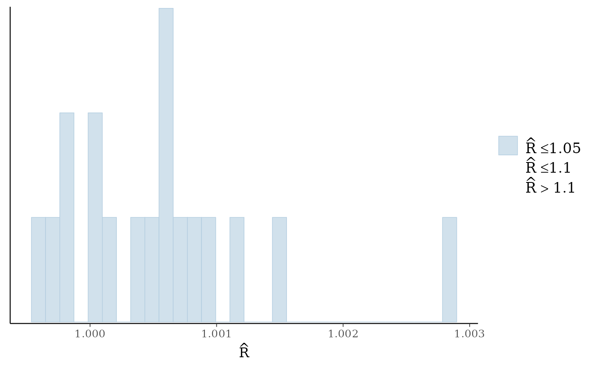
mcmc_plot(mglmm_fit, plotfun = "neff_hist")
#> `stat_bin()` using `bins = 30`. Pick better value with `binwidth`.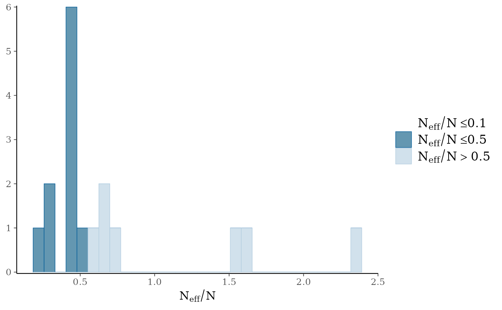
We can also examine the output for each parameter visually using a
traceplot combined with a density plot, which is given by the default
plot() command:
plot(mglmm_fit, ask = FALSE)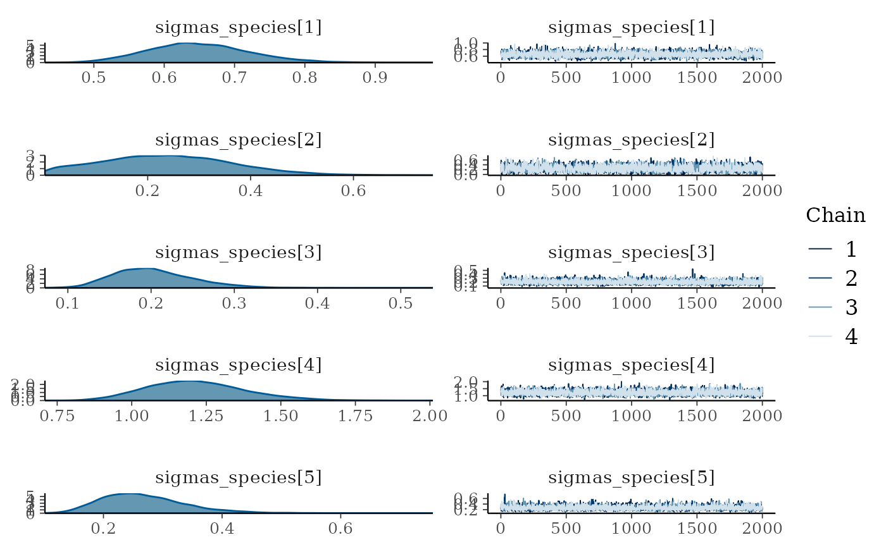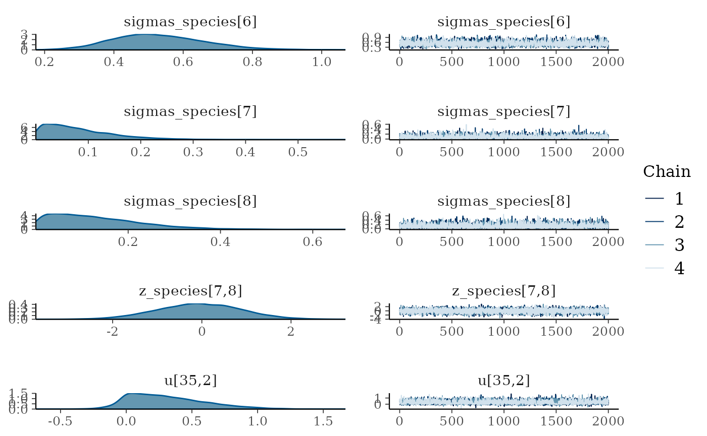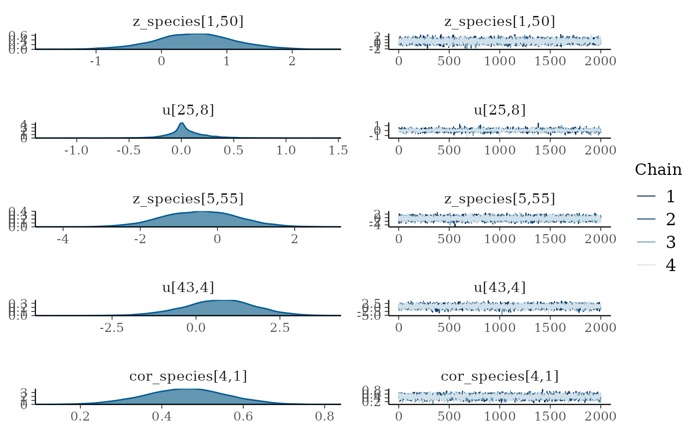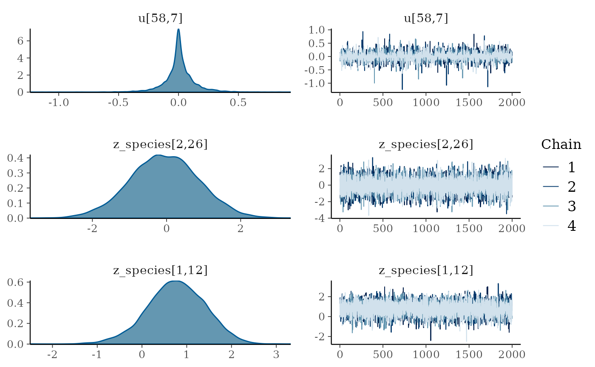
By default the plot() command plots all of the
parameters with sigma or kappa in their name plus a random selection of
20 other parameters, but this can be overridden by either specifying the
parameters by name (with or without regular expression matching) or
changing the number of parameters to be randomly sampled. Use the
get_parnames() function to get the names of parameters
within a model - and the jsdm_stancode() function can also
be used to see the underlying structure of the model.
All the mcmc plot types within bayesplot are supported by the
mcmc_plot() function, and to see a full list either use
bayesplot::available_mcmc() or run mcmc_plot()
with an incorrect type and the options will be printed.
We can also view the environmental effect parameters for each species
using the envplot() function.
envplot(mglmm_fit)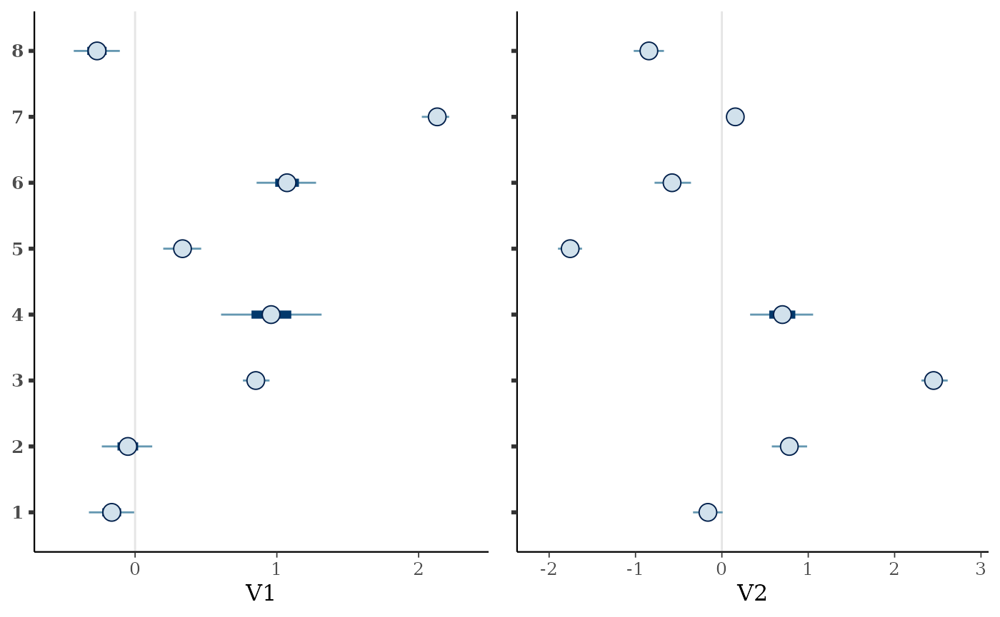
Posterior predictions can be extracted from the models using either
posterior_linpred() or posterior_predict(),
where the linpred function extracts the linear predictor for the
community composition within each draw and the predict function combines
this linear predictor extraction with a random generation based on the
predicted probability for the family. Both functions by default return a
list of length equal to the number of draws extracted, where each
element of the list is a sites by species matrix.
mglmm_pp <- posterior_predict(mglmm_fit)
length(mglmm_pp)
#> [1] 8000
dim(mglmm_pp[[1]])
#> [1] 75 8As well as the MCMC plotting functions within bayesplot the ppc_
family of functions is also supported through the
pp_check() function. This family of functions provides a
graphical way to check your posterior against the data used within the
model to evaluate model fit - called a posterior retrodictive check (or
posterior predictive historically and when the prior only has been
sampled from). To use these you need to have set
save_data = TRUE within the stan_jsdm() call.
Unlike in other packages by default pp_check() for
jsdmStanFit objects extracts the posterior predictions then
calculates summary statistics over the rows and plots those summary
statistics against the same for the original data. The default behaviour
is to calculate the sum of all the species per site - i.e. total
abundance.
pp_check(mglmm_fit)
#> Using 10 posterior draws for ppc plot type 'ppc_dens_overlay' by default.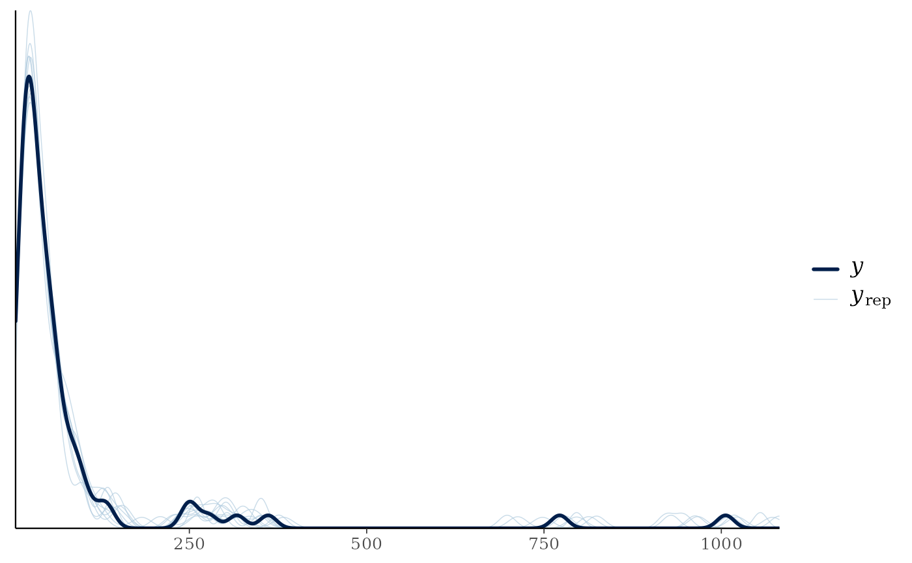
The summary statistic can be changed, as can whether it is calculated for every species or every site:
pp_check(mglmm_fit, summary_stat = "mean", calc_over = "species",
plotfun = "ecdf_overlay")
#> Using 10 posterior draws for ppc plot type 'ppc_ecdf_overlay' by default.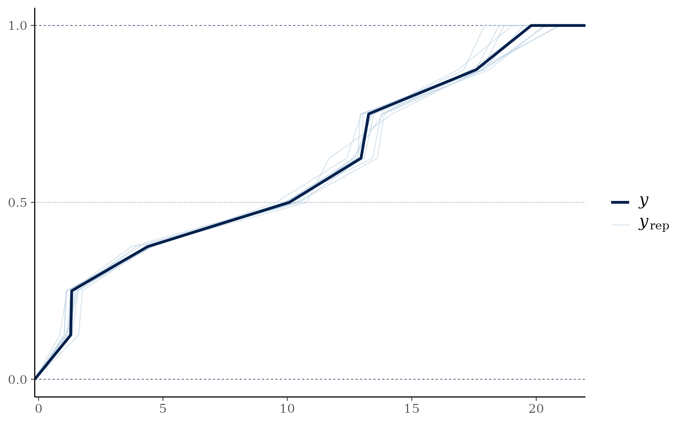
We can examine the species-specific posterior predictive check
through using multi_pp_check(), or examine how well the
relationships between specific species are recovered using
pp_check() with plotfun = "pairs".
As we have run the above model on simulated data and the original
data list contains the parameters used to simulate the data we can use
the mcmc_recover_ functions from bayesplot to
see how the model did:
mcmc_plot(mglmm_fit, plotfun = "recover_hist",
pars = paste0("sigmas_species[",1:8,"]"),
true = mglmm_test_data$pars$sigmas_species)
#> `stat_bin()` using `bins = 30`. Pick better value with `binwidth`.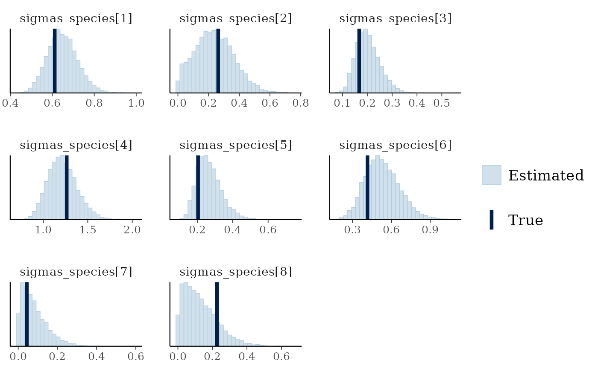
mcmc_plot(mglmm_fit, plotfun = "recover_intervals",
pars = paste0("cor_species[",rep(1:nspecies, nspecies:1),",",
unlist(sapply(1:8, ":",8)),"]"),
true = c(mglmm_test_data$pars$cor_species[lower.tri(mglmm_test_data$pars$cor_species, diag = TRUE)])) +
theme(axis.text.x = element_text(angle = 90))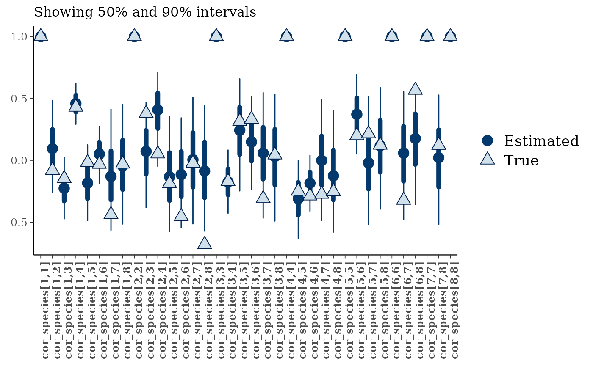
Fitting a GLLVM
The model fitting workflow for latent variable models is very similar to that above, with the addition of specifying the number of latent variables (D) in the data simulation and model fit. Here we change the family to a Bernoulli family (i.e. the special case of the binomial where the number of trials is 1 for all observations), make the covariate effects on each species draw from a correlation matrix such that information can be shared across species, and change the prior to be a Student’s T prior on the predictor-specific sigma parameter.
set.seed(3562251)
gllvm_data <- gllvm_sim_data(N = 50, S = 12, D = 2, K = 1,
family = "bernoulli",
beta_param = "cor",
prior = jsdm_prior(sigmas_preds = "student_t(3,0,1)"))
gllvm_fit <- stan_jsdm(Y = gllvm_data$Y, X = gllvm_data$X,
D = gllvm_data$D,
family = "bernoulli",
method = "gllvm",
beta_param = "cor",
prior = jsdm_prior(sigmas_preds = "student_t(3,0,1)"),
refresh = 0, log_lik = FALSE)
gllvm_fit
#> Family: bernoulli
#> Model type: gllvm with 2 latent variables
#> Number of species: 12
#> Number of sites: 50
#> Number of predictors: 2
#>
#> Model run on 4 chains with 4000 iterations per chain (2000 warmup).
#>
#> No parameters with Rhat > 1.01 or Neff/N < 0.05Again, the diagnostic statistics seem reasonable:
mcmc_plot(gllvm_fit, plotfun = "rhat_hist")
#> Warning: Dropped 1 NAs from 'new_rhat(rhat)'.
#> `stat_bin()` using `bins = 30`. Pick better value with `binwidth`.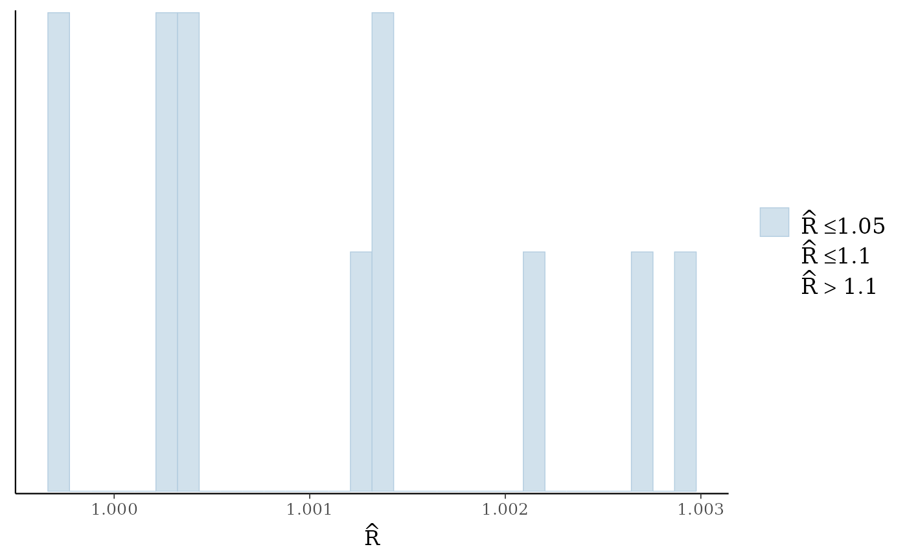
mcmc_plot(gllvm_fit, plotfun = "neff_hist")
#> `stat_bin()` using `bins = 30`. Pick better value with `binwidth`.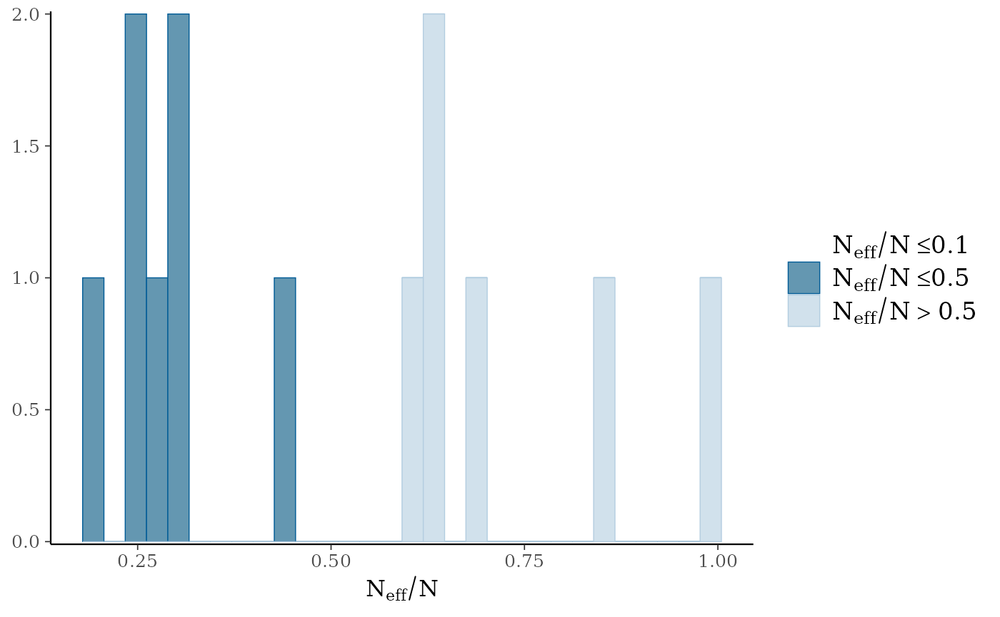
For brevity’s sake we will not go into the detail of the different
functions again here, however there is one plotting function
specifically for GLLVM models - ordiplot(). This plots the
species or sites scores against the latent variables from a random
selection of draws:
ordiplot(gllvm_fit, errorbar_range = 0.5)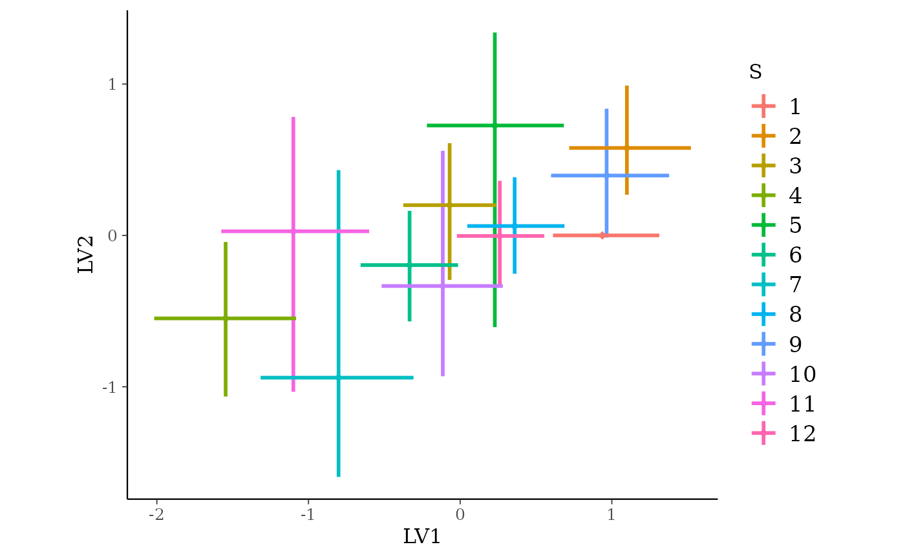
ordiplot(gllvm_fit, type = "sites", geom = "text", errorbar_range = 0) +
theme(legend.position = "none")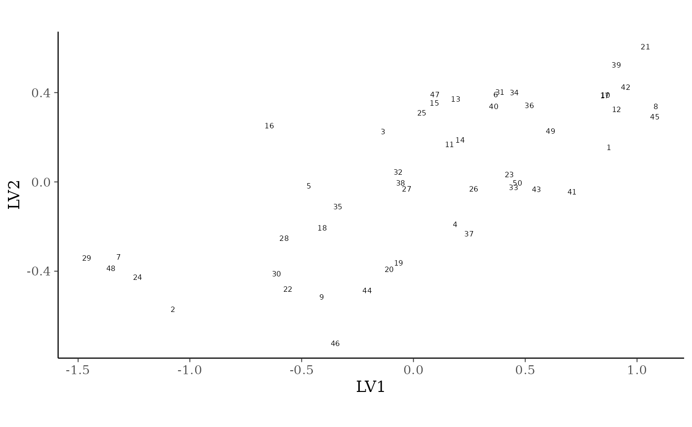
You can change the latent variables selected by specifying the
choices argument, and alter the number of draws or whether
you want to plot species or sites with the other arguments.
References
Warton et al (2015) So many variables: joint modeling in community ecology. Trends in Ecology & Evolution, 30:766-779. DOI: 10.1016/j.tree.2015.09.007.
Wilkinson et al (2021) Defining and evaluating predictions of joint species distribution models. Methods in Ecology and Evolution, 12:394-404. DOI: 10.1111/2041-210X.13518.
Vehtari, A., Gelman, A., and Gabry, J. (2017). Practical Bayesian model evaluation using leave-one-out cross-validation and WAIC. Statistics and Computing. 27(5), 1413–1432. DOI: 10.1007/s11222-016-9696-4.